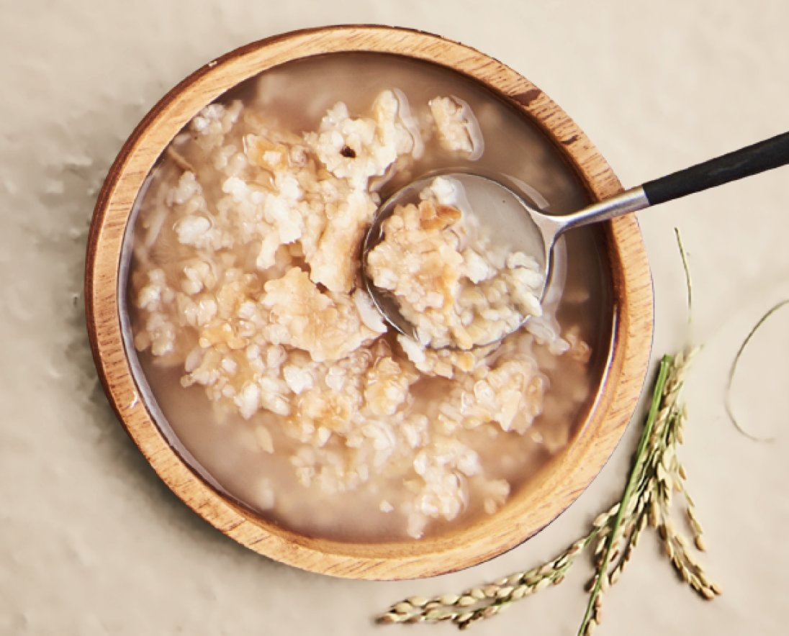
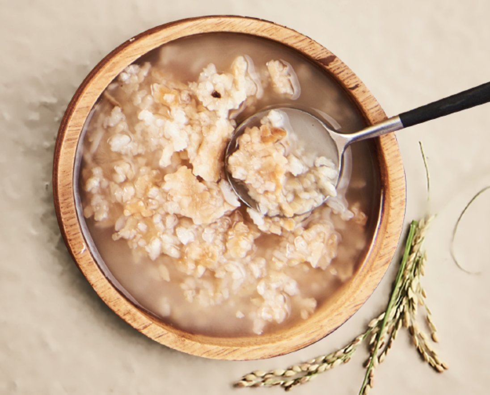

Jiyun's는 한인의 관점에서 사랑으로 요리 한 맛있는 미국식 아침 식사를 즐길 수있는 친절하고 매력적인 곳입니다.
캘리포니아에서 자라면서 어머니가 아침 식사를 할 때를 제외하고는 항상 전형적인 미국 소녀처럼 느껴졌습니다. 그녀는 항상 전통적인 미국식 아침 식사 음식을 요리했지만 한국에서 자랐으며 나중에 미국의 한국 가정에서 살았던 것을 기억하는 요리와 기술을 추가했습니다
엄마의 음식을 먹으면서 저의 유산과 연결되어 있고 동시에 미국인이 된 것을 자랑스럽게 여겼습니다. 그녀는 미국이된다는 것이 당신이 어디에서 왔는지 잊어 버리는 것이 아니라 이민자 국가에 사는 많은 문화와 전통을 받아들이는 것을 의미한다는 것을 보여주었습니다.
이제 지연의는 당신을 채우고 미소 짓는 따뜻한 식사와 함께 두 세계의 최고를 제공합니다!
 
